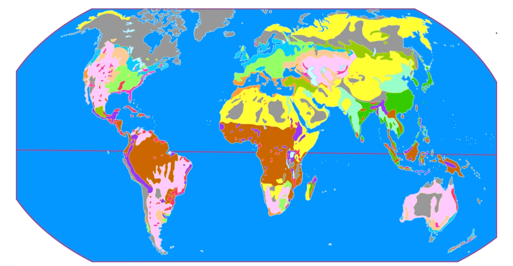

気候を読む
地図をタップすると、その地点の雨温図とハイサーグラフ、気候区分の判定手順、植生・作物・家畜のデータが出ます。地図を「植生」「農業」に切り替えたり、海流や風を重ねたりして、気候との関係を確かめましょう。
このデータの出典(実在の地球)
- 標高・水深: NOAA NCEI ETOPO 2022(氷床表面)
- 陸上の気温・降水量: デラウェア大学 Air Temperature & Precipitation v5.01(NOAA PSL 提供、1981〜2010年平均)
- 海面水温: NOAA OI SST V2(1991〜2020年平均)
- 海上の降水量: GPCP v2.3(1991〜2020年平均)
- 風: NCEP/NCAR 再解析 地表付近(1991〜2020年平均)
- 海流: NOAA GODAS 深さ5m(1991〜2020年平均)。暖流・寒流は、同緯度の海の平均水温との差(±1.2℃)と流れの向き(高緯度向き/低緯度向き)で色分け
- プレート: Bird (2003) PB2002。高校地理の主要プレートにまとめて表示
- 大地形: Hasterok ほか (2022) Global geologic provinces の「最後の造山運動」を、新期・古期造山帯と安定陸塊に対応させたもの
- 植生: ウィスコンシン大学 SAGE Global Potential Vegetation(Ramankutty & Foley 1999)。人の手が入る前の潜在自然植生
- 作物: MapSPAM 2020 V2r2 収穫面積(IFPRI)。オリーブと飼料作物だけ GAEZ+ 2015(Frolking ほか 2020)
- 家畜: FAO Gridded Livestock of the World 2015(Gilbert ほか 2018)
- 農業形態: FAO/ILRI Global livestock production systems v5(Robinson ほか 2011)。放牧中心/天水の耕作+家畜/灌漑の耕作+家畜/森林など/不適地 にまとめて表示
- 農業地域区分: ホイットルセー(1936)の区分図の画像を位置合わせして1°格子に読み取ったもの。クイズの農業形態の正解はこれ。海岸沿いの細い区分は1〜2セルずれることがあります
- 現在のデータから判定した区分: データセットではなく、上の作物・家畜・灌漑・気候のデータに規則をあてはめて判定した自作の区分。自給的か企業的かは地域(新大陸・モンスーンアジアなど)で代用しているので、教科書の地図と食い違う場所があります
値は1°×1°(約100km四方)の平均なので、都市の観測値とは少しずれます。南極・グリーンランド内陸の気温はNCEP/NCAR再解析、降水はGPCPで補っています。ケッペンの区分は、この気温・降水量を教科書の判定法にあてはめた結果です。シミュレーションは使っていません。
農業地域区分の元の地図(ホイットルセー)
「農業」の地図とクイズの農業形態は、この画像を1°格子に読み取ったものです。色は 黄=遊牧、薄桃=企業的牧畜、茶=焼畑、紫=粗放的定住、濃緑=集約的稲作、薄緑青=集約的畑作、赤=プランテーション、橙=地中海式、肌色=企業的穀物、黄緑=混合、オリーブ=自給的混合、水色=酪農、濃桃=園芸、灰=非農業。
